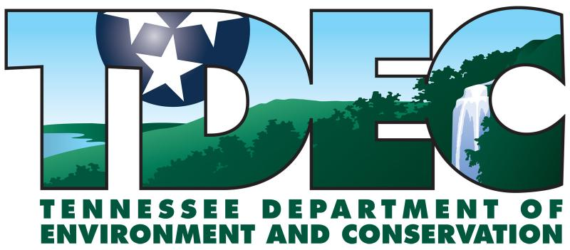
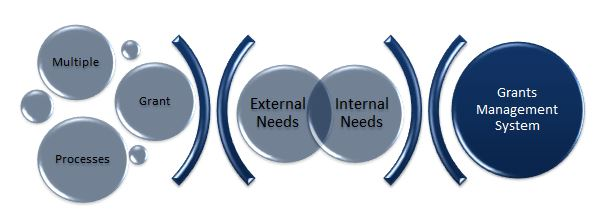
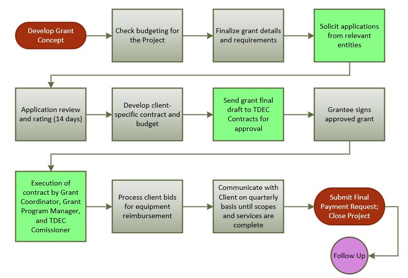
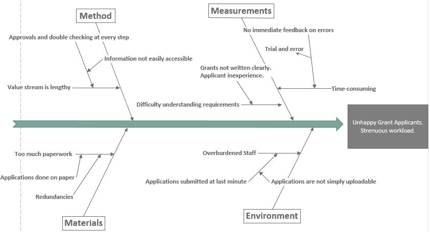
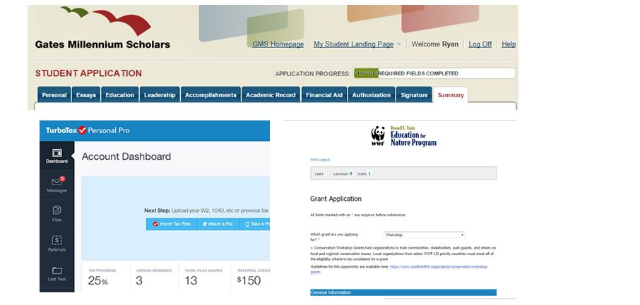
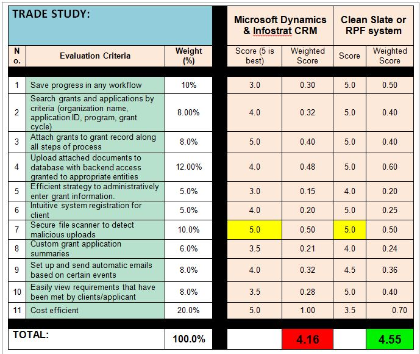
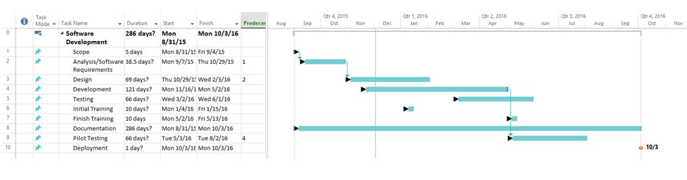
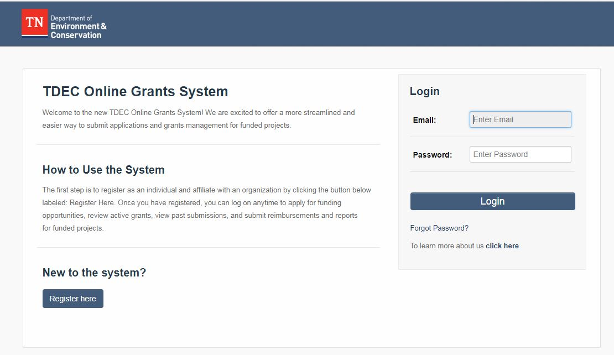

Introduction
The Tennesee Department of Environment and Conservation (TDEC) project was a semester-long student consulting project, in which my partner, Ryan Burke, and I worked with TDEC to design an improved grants management system. We worked directly with upper-management and the lead of the granting department. We had weekly meetings, in which we presented our updates, performed interviews, and discussed our plan of action for the following week. At first, we dove into understanding their current system, finding the flaws and opportunties for improvement. Through further research, and interviews of stakeholders and clients, we offered our recommendations and a map for implementation. The project ended with a 60-page report documenting our findings and recommendations, a timeline for implementation, final presentation to key-stakeholders, and a mock request for proposal for the grants management system. Working with TDEC was a great opportunity for us to work closely with an organization that upholds our values for the environment, and gave us real-world experience. To see the full project, check out the links at the bottom!
TDEC Team:
- Tom Eck, Deputy Commissioner of Operations
- Jeni Lind Brinkman, Director of TDEC Grants and Contracts Administration
- David Wesch, Director of Information Systems
- Office of Sustainable Practices
- Division of Solid Waste Management
- Division of Recreational and Educational Services
Project Scope
The goal of this improvement project was to streamline the grant issuance process at TDEC. These grants are important because they support projects that protect the environment and conserve resources. Currently, there are five main granting programs: waste reduction grants; recycling rebates, equipment and used oil grants; clean Tennessee Energy grants; Local Parks and Recreation Fund; and Recreational Trails Program. A client must work through the granting program specific to their need in order to receive approval and funding. In the fiscal year 2013-2014, TDEC grants provided approximately $24 million to more than 170 entities. The project must took into account both the external and internal needs, multiple processes of the granting divisions, and barriers to entry.
 Summary of the problem to solution
The primary measure of the success of our system was the time it took the system to receive a grant, review it, approve it, and then grant the money to the entity that requested it. Another aim was to improve the satisfaction of the customers, which would be measured through surveying. The shorter time to receive a grant would improve satisfaction. Additionally, we wanted to make sure the customers are not doing any unnecessary work in the process of submitting documents for their grant proposal.
Research
The vision for the new system was to have a centralized online service that serves as a grant management system. Under this system are the four branches: grants, fees, permits, and licenses. The old system had 5 main divisions that have the four branches stated above. The online system is much more intuitive and tailored to the preferences of the clients. The system made the grant approval process shorter.
Throughout the first phase of our project, we outlined the business process, as seen below. A more descriptive and in-depth diagram can be found within the paper in the links below.
 Overarching business processThe primary improvement desired for the grants management system was better customer satisfaction. From our conversations with our enterprise systems team, we learned that grant applicants were not happy with the granting process. We aimed to improve client relations, reduce the heavy workloads for TDEC employees, and reach a wider audience for grant solicitation. The figure below shows our fishbone diagram, a summary of the root-cause analysis for the grants management system.
 Fishbone diagram identifying root causesDesign
We decided the new application would have to be online to reduce time and cost, and improve accessiblity. The new system was designed for easy and understandable functionality on the front and back end of the process. Some of the functionalities for the front (client) end includes an application tracking system with calendar functions, uploadable/savable applications, an online budget document submission, and attachable files for bids, contracts, maps, etc.. On the back end, documents are easily accessible to the TDEC employees that are involved in the granting process - it now does not take any extra time for the delivery of information within TDEC. Again, the primary goal was to have good, functioning relationships between TDEC and its clients
We designed ours applications to take after simliar processes such as TurboTax, scholarship management websites, and other granting offices from around the country. We specifically looked at Alabama department of Environmental Management, Georgia Environmental Protection Division, Gates Millennium Scholars, and the Tennessee Arts Commission.
 Examples of potential layouts for designTo provide better visibility of options, we illustrated two solutions for TDEC. The first was using a off-the-shelf customer relationship management(CRM) product such as Microsoft Dynamics and Infostrat CRM or building a clean slate homegrown solution. Below is an analysis we did of the potiential solutions.
 Off-the-shelf Solution vs Clean Slate SolutionImplementation
At the end of our project we provided TDEC with a 60-page final report documenting our findings and recommendations, a mock request for proposal for a CRM, a timeline for implementation, and a final presentation to stakeholders. The timeline included key information, such as scoping, testing, development, pilote testing, training, and deployment. The timeline is illustrated below. Our estimated launch was within 286 days from the start date.
 Timeline for implementationAlthough, TDEC could have built a homegrown solution, due to resources and time they decided to go with a off-the-shelf-solution simliar to our recommendation. Their solution is called SmartSimple and was launched in January 2016. The fully online grants managment system was launched 3 months after our estimated launch date. Our work was helpful in identifying key issues and requirements for their current system and led conversation when working with the vendor. We do not have permissions to see inside the system but their front page is a large improvement over their original page.
 The implemented solution with SmartSimpleProject Links: Final Paper | Final Presentation | Request for Proposal | ENGM3000